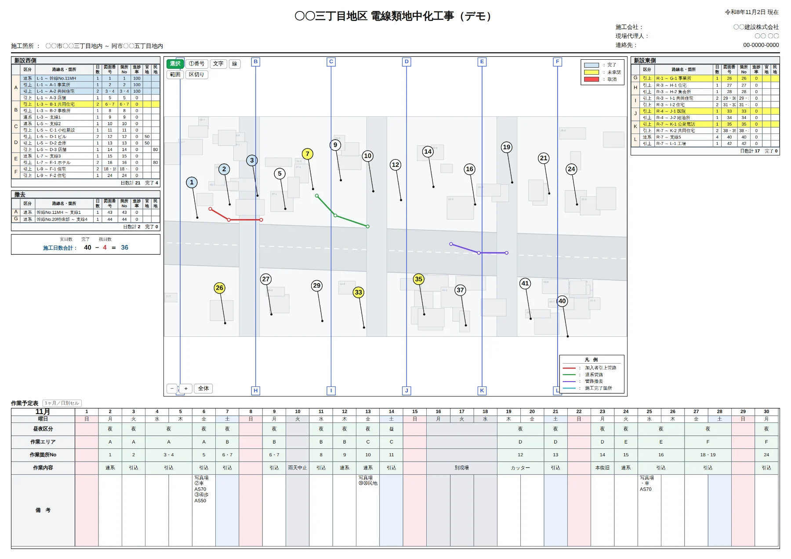

工程表作成ツールCONSTRUCTION SCHEDULE BUILDER
明細表・図面・日ごとの作業予定を、A3横1枚に収めた現場の工程表。1ヶ月と3ヶ月をワンタッチで切り替え、雨で流れた日を入れれば以降の予定が自動でずれます。図面には施工箇所の番号を打てるので、「どこを・いつ」が1枚で伝わります。

雨が1日降るたび、Excelを全部ずらし直していませんか
雨休のたびに手で組み直し
1日中止になると、以降の予定を全部1日ずつ動かすことに。セルを切り取って貼って…を何十行分も。日曜や別現場をまたぐと数え間違いも起きます。
図面と工程が別の紙
「箇所No.12」がどこなのか、工程表を見ても分からない。図面を別で開いて突き合わせることになり、協議の場で手が止まります。
印刷すると崩れる
画面では整っていたのに、A3で出すと列が切れる・2枚に分かれる。倍率を触っては出し直す時間がもったいない。
現場が動いても、1枚が崩れない
工程・図面・印刷を、同じ1枚の中で完結させます。
1ヶ月 ⇄ 3ヶ月
同じデータのまま表示だけを切替。月ごとの細かい調整は1ヶ月、全体の見通しは3ヶ月で。◀▶で月を送れます。
日別セル ⇄ バーチャート
「昼夜区分・作業エリア・箇所No・作業内容・備考」を日ごとに書く見慣れた様式と、期間を横棒で見る線表。どちらも同じ予定から作られます。
休工を入れると自動でずれる
日付をクリックして雨天中止・強風中止・休工・別現場を選ぶだけ。その日は施工日から外れ、以降の作業がまとめて後ろへ動きます。
動かしたくない日は固定
夜間規制を取得済み・協議済みの作業は📌で日付を固定。雨が入っても、そこだけは動きません。完了にした作業は自動で固定されます。
棒をドラッグして組み替え
線表の棒を左右にドラッグすれば開始日、右端を引けば日数が変わります。以降の作業はその場で詰め直されます。
図面に施工箇所の番号
上中央にPDF/画像の図面を差し込み、①②③の番号・引き出し線・管路の色分け・50m毎の区切りを書き込み。工程の行を選ぶと、図面の丸が光ります。
状態の色が表と図面で揃う
予定・施工中・完了・未承諾・取消。明細表の行、線表の棒、図面の丸が同じ色になるので、進み具合がひと目で分かります。
施工日数を自動集計
実日数 − 完了 ＝ 残日数、表ごとの日数計まで自動。日数を直せばその場で変わります。
A3横1枚でそのまま印刷
画面の用紙がそのまま出ます。A4横にも1枚で収まり、「工程表だけ（図面を隠す）」も選べます。
基本のステップ
工事と作業を並べる
ひな型（電線類地中化／汎用）を選び、工事名と開始日を入れます。「＋作業」で行を足して日数を入れれば、前の行の続きから日程が自動で決まります。
図面を入れて番号を打つ
「図面 → 読込」でPDFや画像を上中央へ。「①番号」で施工箇所に番号を打つと、選んでいた作業の箇所Noにも自動で入ります。
現場が動いたら直す
雨なら日付をクリックして「雨天中止」。動かしたくない作業は📌で固定。線表なら棒をドラッグするだけです。
A3で出す
「印刷」からA3横（またはA4横）。プリンタ側は「余白なし・用紙に合わせる」。保管は「保存」でJSONに書き出します。
使う前に知っておくこと
| 対応ブラウザ | Chrome / Edge（PC）。用紙はA3横で固定 |
|---|---|
| 通信 | 不要。図面にPDFを読み込むときだけ、表示ライブラリの取得に接続が必要（画像なら完全オフライン） |
| 保存先 | お使いの端末の中だけ（自動保存）。受け渡し・保管はJSONファイルの書き出し／読み込み |
更新履歴 最新 —